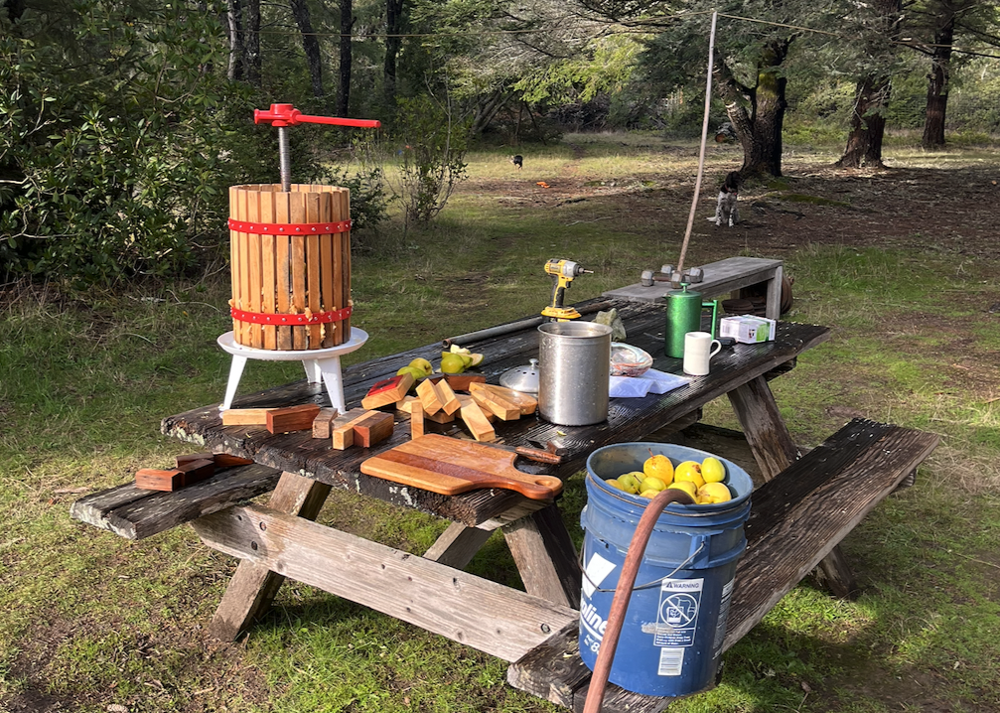

Technology should serve the land and those who care for it, not extract from them. We build tools that strengthen community bonds, respect privacy, and work in harmony with natural systems.
Community Minded Homesteading Tools
Building in the open, growing at nature's pace.
Connecting homesteaders, sensors, and intelligence to build resilient, community-minded systems that nourish the earth. A suite of tools for those who tend the land, share knowledge with neighbors, and seek harmony between technology and nature.

Technology should serve the land and those who care for it, not extract from them. We build tools that strengthen community bonds, respect privacy, and work in harmony with natural systems.
Tools that help us listen to and nourish the land.
Open source, open hardware, shared knowledge.
Works offline, runs locally, built to last.
Gentle technology that respects your time and attention.
Interested in learning more or want to join the conversation? We’d love to hear from you.
Send us an email and we'll get back to you soon.